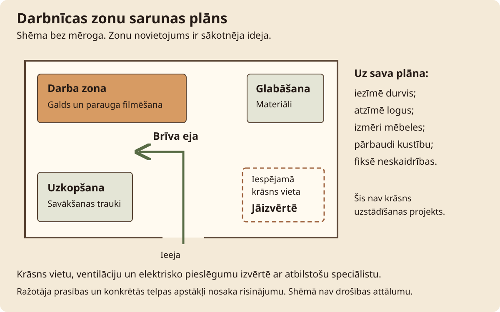

Darbnīcas labiekārtošana · Stunda 5 no 6
Iekārtu izvietojums un jautājumi elektriķim
Savāc konkrēto iekārtu datus un sagatavo izvietojuma skici pieslēguma, ventilācijas un apkopes izvērtēšanai.
Stundas rezultāts. Iekārtu datu lapa, anotēta izvietojuma skice un konkrēti jautājumi elektriķim un ventilācijas speciālistam.
Teksts un kadri sagatavoti izmēģinājumam. Norādītie laiki ir plānoti; darbnīcas izmēģinājums un video ieraksts vēl nav dokumentēti.
Pirms filmēšanas un prakses
Priekšzināšanas. Ir telpas skice un pieejamas paredzēto iekārtu instrukcijas vai modeļi.
Šajā stundā izmanto aukstu, izslēgtu iekārtu un dokumentus. Mērķis ir sagatavot datus, ne ierīkot vai pārbaudīt elektrisko ķēdi. Ja modelis vēl nav izvēlēts, skicē to atzīmē kā atvērtu izvēli.
| Rīks vai materiāls | Kam tas vajadzīgs |
|---|---|
| Krāsns modeļa informācija | Marķējums un ražotāja instrukcija; krāsni nedarbina. |
| Virpas instrukcija | Tās lietošanas un novietojuma prasības. |
| Mērlente | Pieejami telpas un izvietojuma mērījumi. |
| Jautājumu lapa | Modelis, dati un pārbaudes uzdevums. |
| Paraugs | Sākuma stāvoklis | Izmantošana ainās |
|---|---|---|
| I1 | Krāsns modelis un instrukcija | Prasību nolasīšana. |
| I2 | Virpas dati | Mitrās zonas un pieslēguma jautājumi. |
| P | Telpas skice | Prasību un neatrisināto vietu pieraksts. |
Pārbaudi pirms ieraksta
- Krāsns ir auksta un netiek iedarbināta demonstrācijai.
- Instrukcijas modelis sakrīt ar iekārtas marķējumu.
- Privāti dokumentu un telpas dati nav nevajadzīgi redzami.
- Mērījumos nav jāpārvieto smaga iekārta vai jāatver korpuss.
Drošība šajā stundā
Neatver sadalni, neveic elektroinstalācijas darbus vai sprieguma mērījumus. Pieslēguma atbilstību un aizsardzību izvērtē kvalificēts elektriķis. Krāsni darbina tikai pēc konkrētās telpas, pieslēguma, uzstādījuma un ventilācijas izvērtēšanas. Putekļu filtrs neaizsargā pret krāsns gāzēm.
Apstājies, ja: ir bojāts savienojums, neskaidri dati, karsta iekārta vai nepieciešama piekļuve elektriskām daļām. Uzdevumu turpini tikai ar dokumentiem.

Filmēšanas secība
Ainas un ieteicamais teksts
7 ainas · 3:45
Citāti ir pielāgojams pasniedzēja teksts. Pēc runas atstāj laiku darbības vērošanai. Ja kustība aizņem ilgāk, pagarini ainu un atjauno laika plānu.
-
1. Dokumentēšanas uzdevums
0:00-0:20 · 20 sAinas kods: telpa-05-a01
- Kadrējums
- Auksta iekārta un instrukcija.
- Darbība
- Nosauc, ka stundā savāc datus. Parādi izslēgtu aprīkojumu, to neiedarbinot.
Ieteicamais runājamais teksts
Šodien sagatavosim iekārtas datus un jautājumus. Pieslēgumu šajā stundā neveidojam.
- Teksts ekrānā
- Rezultāts: datu lapa
- Pārbaudes kadrs
- Redzams dokumentu darbs, ne elektriskā pārbaude.
- Pauze un montāža
- Nepievieno krāsns ieslēgšanas kadru ilustrācijai.
-
2. Modelis un prasības
0:20-0:55 · 35 sAinas kods: telpa-05-a02
- Kadrējums
- Marķējums un instrukcijas atbilstošā lapa.
- Darbība
- Pārnes precīzu modeļa nosaukumu un instrukcijas versiju. Pieraksti ražotāja norādītos elektriskos datus, neko neaprēķinot par esošo pieslēgumu.
Ieteicamais runājamais teksts
Pārbaudu, vai instrukcija attiecas uz šo modeli. Datus pierakstu elektriķa izvērtējumam.
- Teksts ekrānā
- Modelis un instrukcijas versija
- Pārbaudes kadrs
- Abi modeļu nosaukumi sakrīt.
- Pauze un montāža
- Pieturi marķējumu salasāmu.
-
3. Izvietojums un piekļuve
0:55-1:35 · 40 sAinas kods: telpa-05-a03
- Kadrējums
- Mērlente pie aukstas iekārtas un skice.
- Darbība
- Pieraksti pieejamos attālumus. Blakus norādi, kur instrukcijā ir prasības; ja datu nav, ieraksti jautājumu. Ietver apkalpošanas piekļuvi.
Ieteicamais runājamais teksts
Salīdzinu skices vietu ar konkrētās instrukcijas prasībām. Trūkstošu attālumu neuzminu.
- Teksts ekrānā
- Mērījums / ražotāja prasība
- Pārbaudes kadrs
- Mērījums un prasība ir atsevišķi lauki.
- Pauze un montāža
- Nerādi cita modeļa skaitli kā vispārīgu standartu.
-
4. Ūdens un vadu ceļš
1:35-2:10 · 35 sAinas kods: telpa-05-a04
- Kadrējums
- Skice ar virpu, savākšanas traukiem un ejām.
- Darbība
- Atzīmē šļakatu zonu un pašreizējos vadu ceļus. Bojājumus fiksē, nepārvietojot pieslēgumus ar mitrām rokām.
Ieteicamais runājamais teksts
Skicē atzīmēju ūdeni un vadu ceļus. Neskaidro risinājumu atstāšu pārbaudei.
- Teksts ekrānā
- Ūdens zona un elektrības jautājumi
- Pārbaudes kadrs
- Krustpunkti ir atzīmēti kā risināmi.
- Pauze un montāža
- Vispirms izmanto shēmu, ne iekārtu pārvietošanu.
-
5. Krāsns gaiss un siltums
2:10-2:50 · 40 sAinas kods: telpa-05-a05
- Kadrējums
- Trīs jautājumi pie krāsns skices.
- Darbība
- Nošķir izgarojumu savākšanu, telpas siltuma aizvadīšanu un pieplūdi. Pievieno ventilācijas speciālista jautājumus.
Ieteicamais runājamais teksts
Krāsnij jāizvērtē izgarojumu nosūce, telpas siltums un gaisa pieplūde. Pierakstu tos kā atsevišķus jautājumus.
- Teksts ekrānā
- Izgarojumi; siltums; pieplūde
- Pārbaudes kadrs
- Shēmā nav izdomāta gatava pieslēguma.
- Pauze un montāža
- Atsauci uz instrukciju rādi kopā ar jautājumu.
-
6. Uzdevums speciālistam
2:50-3:25 · 35 sAinas kods: telpa-05-a06
- Kadrējums
- Aizpildāma tabula ar jautājumiem.
- Darbība
- Apkopo datus un pārbaudes vajadzības, tostarp pieslēguma aizsardzību, uzstādīšanu, rīcību avārijā un atbilstošu ugunsdrošības aprīkojumu.
Ieteicamais runājamais teksts
Pierakstītie dati palīdz uzdot konkrētus jautājumus. Atbilstību apstiprina attiecīgā darba speciālists.
- Teksts ekrānā
- Jautājums; atbilde; dokuments
- Pārbaudes kadrs
- Katram jautājumam paredzēta atbildes vieta.
- Pauze un montāža
- Neizveido atzīmi “pārbaudīts”, ja atbildes vēl nav.
-
7. Noslēgums ar atvērtajiem jautājumiem
3:25-3:45 · 20 sAinas kods: telpa-05-a07
- Kadrējums
- Datu lapa kopā ar plānu.
- Darbība
- Saglabā dokumentus ar datumu un atzīmē neatrisināto.
Ieteicamais runājamais teksts
Šīs stundas rezultāts ir pārskatāma datu mape. Līdz vajadzīgajām pārbaudēm iekārtas palaišanu neplānojam.
- Teksts ekrānā
- Tālāk: glabāšana un organizācija
- Pārbaudes kadrs
- Dokumenti datēti un atvērtie jautājumi redzami.
- Pauze un montāža
- Noslēdz ar dokumentiem, ne strādājošu krāsni.
Ainu atzīmes saglabājas šajā pārlūkā, ja pieejama lokālā glabāšana. Tās atzīmē ieraksta progresu, nevis tehniskās drošības pārbaudi.
Prakse darbnīcā
Pamatuzdevums. Iekārtu datu lapa, anotēta izvietojuma skice un konkrēti jautājumi elektriķim un ventilācijas speciālistam.
| Darba posms | Plānotais laiks |
|---|---|
| Modeļa un dokumentācijas pārbaude | 15 min |
| Pieejamo izmēru un izvietojuma pieraksts | 15 min |
| Ūdens, vadu un ventilācijas jautājumi | 15 min |
| Speciālista uzdevuma un mapes sagatavošana | 15 min |
| Kopā | 60 min |
Filmēšana. Plāno 45-75 minūšu atsevišķu filmēšanas sesiju dokumentiem, telpas skatiem un atkārtojumiem. Šī aplēse vēl jāpārbauda.
Gaidīšana. Speciālista atbildes, uzstādīšana un atbilstības pārbaude ir atsevišķi darbi ārpus šīs nodarbības.
Ja paliek laiks. Pārbaudi, vai pēc mapes cits cilvēks var atrast modeli un neatbildētos jautājumus.
Ja jāpārtrauc. Atstāj iekārtu izslēgtu un saglabā nepilnīgos datus ar skaidru atzīmi.
Ko darīt, ja neizdodas
| Novērotā pazīme | Iespējamais iemesls | Nākamā darbība |
|---|---|---|
| Instrukcija ir citam modelim | Līdzīgs izskats uzskatīts par pietiekamu | Atrodi precīzo dokumentu vai pieprasi ražotājam. |
| Atzīmēts tikai attālums līdz sienai | Nav apskatīta piekļuve un apkārtējie materiāli | Papildini skici un salīdzini pilno instrukciju. |
| Pašrocīgi apstiprināta pieslēguma jauda | Datu nolasīšana sajaukta ar pārbaudi | Saglabā datus un uztici izvērtējumu elektriķim. |
Drukājama darba lapa · Darbnīcas labiekārtošana 05
Iekārtu izvietojums un jautājumi elektriķim: pieraksti
Datums: ____________________ Darba / māla kods: ____________________
Mērķis. Iekārtu datu lapa, anotēta izvietojuma skice un konkrēti jautājumi elektriķim un ventilācijas speciālistam.
Pirms uzdevuma. Neatver sadalni, neveic elektroinstalācijas darbus vai sprieguma mērījumus. Pieslēguma atbilstību un aizsardzību izvērtē kvalificēts elektriķis. Krāsni darbina tikai pēc konkrētās telpas, pieslēguma, uzstādījuma un ventilācijas izvērtēšanas. Putekļu filtrs neaizsargā pret krāsns gāzēm.
| Mēģinājums / pārbaude | Novērojums / dati | Kas vēl jānoskaidro | Nākamā darbība |
|---|---|---|---|
| 1. pārbaude | |||
| 2. pārbaude | |||
| 3. pārbaude |
Ko pierakstīt darbnīcas žurnālā
- Iekārtas modelis un instrukcijas versija.
- Kādi izmēri reāli nomērīti un kas vēl nav pieejams.
- Elektrības, ventilācijas un ugunsdrošības jautājumi.
- Saņemto atbilžu datumi un dokumentu atrašanās vieta.
Viena nākamā izmaiņa:
Faktiskais darba laiks un pieredzes līmenis:
Pārbaudītais rezultāts un neatbildētie jautājumi:
Palīgmateriāli šai stundai
- Elektriskās keramikas krāsns pamati
- Kā izvēlēties elektrisko krāsni mājas darbnīcai
- Ventilācija krāsns telpā
- Elektrības drošība keramikas krāsnij

Pārbaudītie uzziņas materiāli
Avoti pārskatīti 10.10.2026. Tehniskās norādes piemēro attiecīgajam procesam un konkrētajai iekārtai. Ārvalstu prasības nav Latvijas normatīvu aizstājējs.
Izmēģinājuma un montāžas pieraksts
Scenārija redakcija: Praktiskais izmēģinājums: vēl nav dokumentēts. Aizpildi tabulu pēc faktiskā mēģinājuma un labo ainu laikus.
| Ainas kods / dublis | Izmantojamais fragments | Kas jāprecizē |
|---|---|---|
| telpa-05-a___ | ________________ | ________________ |
| telpa-05-a___ | ________________ | ________________ |